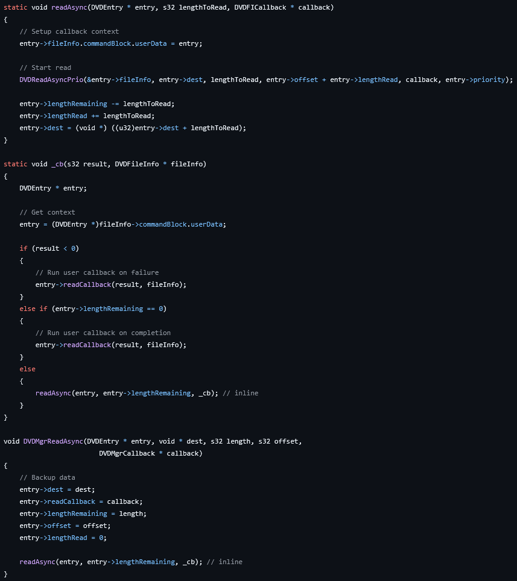
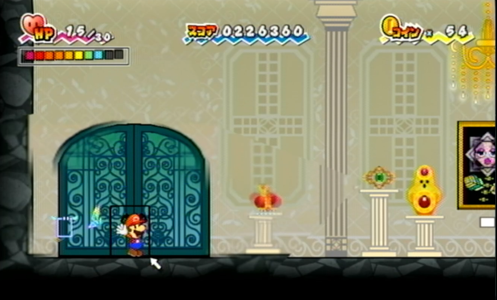
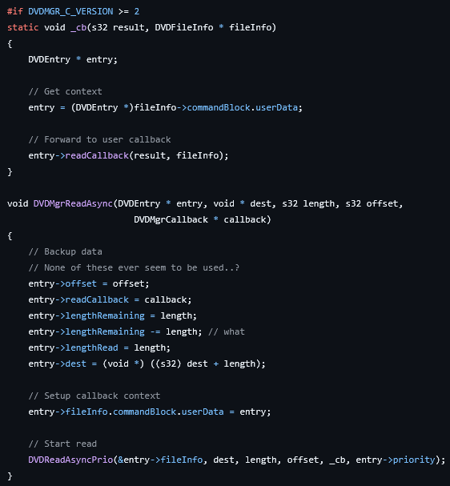

Does what it says on the tin. If you're interested in how the bug works, scroll down for the write-up.
If you're just here to download it, here you go.
When the game needs to load a file from the disc, such as map data, actor models/textures, etc., it calls a function named DVDMgrReadAsync. Intelligent Systems's implementation is very... questionable, as they seem to have programmed it to support reading files in multiple parts, but the game only ever uses it to load files in one go.
Here's a screenshot of the relevant decompiled code:

As you can see in readAsync, the flow eventually reaches a function called DVDReadAsyncPrio. That function, which is part of the RVL SDK, is what calls lower-level SDK functions and is ultimately responsible for sending the file request to the DVD driver.
A basic description of what readAsync does is that it sets the callback in the DVD block, calls DVDReadAsyncPrio, and then sets the lengthRemaining, lengthRead, and dest parameters of the DVDEntry. What's a DVDEntry? Glad you asked! That's the struct made by Intelligent Systems to store the context for DVD requests like this, so that it can read a file in multiple parts. As you can see, it doesn't even pretend to care about the real length of the data it just read, it just subtracts the entire length of the file.
Here's the important bit: you see that "callback" parameter? That's a function, and it's passed to DVDReadAsyncPrio for the SDK to call once it's done reading the file from the disc. In this case, that function is _cb from the above screenshot. That call will happen from the DVD thread. We don't need to cover threading in detail, but what you need to know is that there's a timer that ticks down every clock cycle, and when it reaches 0, the CPU just stops everything it's doing, and jumps to RVL code that sets it up to go do something else. These are called interrupts, and for all intents and purposes, they can effectively occur at any point during code execution.
At some point, an interrupt will occur that will cause the CPU to execute code for the DVD thread, and that's when the file read command is actually processed.
So if interrupts can happen at any point, what if one triggers after the DVDReadAsyncPrio call, but before the DVDEntry parameters are properly set? What if, during that DVD thread interrupt (maybe even if multiple other interrupts happened between the main thread and the DVD thread), the read finishes, and _cb is called?
The result is that, once in _cb (still in the DVD thread), entry->lengthRemaining will still be the whole length of the file, as the interrupt occured before the rest of readAsync properly set it. This triggers another read, but when the main thread executes again, it goes right back to after the DVDReadAsyncPrio call, and there, it sets the entry's parameters. This causes two separate threads to mess with the same entry's parameters while doing work with them. This results in the game crashing.
When playing SPM on a Wii, files are loaded from the disc. Disc loads are quite a lot slower than Wii U VC, which loads files from either the NAND flash or a USB. These loads being significantly faster than disc loads cause Wii U VC to finish file reads faster, and therefore, when that specific interrupt timing occurs and the DVD thread executes before the rest of readAsync properly sets the DVDEntry parameters, Wii U VC loads are more likely to have finished the load, call _cb, trigger another read, and you already know how this ends.
When you enter a room, the game waits until all cutscenes are over, and you have control of the player. Once that's the case, the game preloads files for adjacent maps, including enemy models and textures. Some enemies have a lot of tiny files for textures, with Croacus himself having over 20 files, most of which are only 96 bytes, all loaded by DVDMgrReadAsync. This means that when you enter the 5-4 painting room, each one of those ~20 tiny Croacus files is a chance to get a bad interrupt timing, finish a load too quickly, and JP crash.

The solution is simple, and in fact it's already provided to us by Intelligent Systems in the PAL and US2 versions. We know files are read all at once, so there is no need to verify the DVDEntry's lengthRemaining field in _cb to potentially trigger a 2nd read. We can simply call DVDReadAsyncPrio, and let the SDK handle the rest. Here's the decompiled code of Intelligent Systems's fixed version:

As you can see, this still has some issues, such as the DVDEntry fields still being updated despite never being used, and lengthRemaining being decremented to 0 immediately after being set. Those are likely remains of the previous implementation, as they are never read, they do not actually serve a purpose here. Additionally, _cb doesn't even have a chance of triggering a 2nd read depending on the state of anything, since files are read all at once, under normal circumstances those 2nd reads would never happen anyway.
In conclusion, 6 programmers
-JohnP55